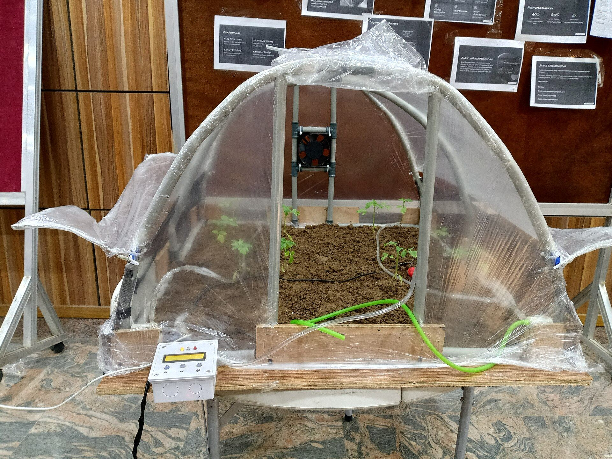

About Jodozo Farms Ltd
An integrated agriculture, agro-processing and agro-allied enterprise — committed to food security, value addition and rural development.
Who We Are
Jodozo Farms Ltd is an integrated agricultural and agro-allied company engaged in crop production, livestock, poultry, dairy, fisheries, beekeeping, agro-processing, agricultural inputs, mechanised agriculture, equipment, water and irrigation, distribution, training and related agricultural services.
Headquartered along the Kaduna Expressway, we combine modern farming techniques with innovative processing to convert farm produce into quality, market-ready products — while empowering the rural communities we work with.
- Integrated value chain — from farm to market
- Modern mechanised farming operations
- Training and empowerment for rural farmers
- Commitment to sustainable agricultural practices

Our Vision & Mission
Our Vision
To be a leading integrated agriculture and agro-allied enterprise in Africa — driving food security, value addition and sustainable rural prosperity.
Our Mission
To produce, process and supply quality agricultural products and services — using modern technology, empowered people and sustainable practices that create value for all stakeholders.
The Principles That Guide Us
Integrity
We do business honestly and transparently — with our partners, farmers, customers and communities.
Sustainability
We farm and process responsibly, protecting land, water and livelihoods for future generations.
Innovation
We adopt modern mechanisation, processing technology and data-driven practices across our operations.
Quality
From seed to shelf, we maintain rigorous standards in production, processing, packaging and delivery.
Community
We empower rural and subsistence farmers through training, outgrower schemes and shared prosperity.
Excellence
We pursue operational excellence and continuous improvement across every part of the value chain.
What We Set Out to Achieve
Our objectives reflect the breadth of our mandate — production, processing, trading, services and rural development.
- Engage in crop, cereal, fruit, plantation and mixed farming
- Rear livestock, poultry and dairy cattle at commercial scale
- Operate fisheries, aquaculture and beekeeping enterprises
- Process, preserve, package, store and market agricultural products
- Supply fertilizers, seeds, agrochemicals, feeds and implements
- Provide mechanised farming and farm management services
- Acquire and service tractors, harvesters and farm machinery
- Develop irrigation systems, farm ponds, dams and water services
- Import, export, distribute and trade agricultural goods and equipment
- Train and empower rural and subsistence farmers
- Promote rural agricultural development and food security
- Build partnerships across the agricultural value chain
Why Jodozo Farms
One partner across the entire agricultural value chain.
Integrated Model
Production, processing, inputs, equipment and trade under one roof.
Reliable Supply
Consistent, traceable produce and products delivered on schedule.
Modern Mechanisation
Our own fleet and irrigation infrastructure guarantee efficiency.
Community Impact
Every project trains and empowers the farmers around it.
Ready to Work With Us?
Whether you want to buy produce, partner on a project or join our academy — we're ready to talk.